Goal
The goal of Chess is to capture you opponents king. This is called checkmate and happens when the king can not make a legal move to escape being captured by an opposing players piece. A piece captures another piece by moving on to a square that is occupied by an opposing piece. There are many different ways to achieve checkmate but first you need to learn the basics.
Setup
This is what the board should look like completely set up.
Steps
Position the board so that a white (or lighter) square is at the bottom right of the board.
Each player places the rooks in the corners of the board.
Place the knights next to the rooks, then the bishops next to the knights.
Place the queen on its matching color and the king on the remaining square
How the Chess Pieces Move
-
Pawn
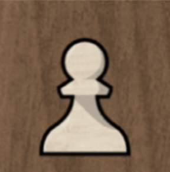Pawns can only move forward one square at a time, except for their very first move where they can move forward two squares. Despite this, pawns can only capture an opposing piece that is one square diagonally in front of them.
-
Knight
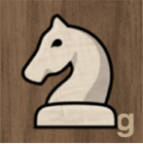Knights move in the shape of an "L". They can move 2 squares in any direction plus one square in any direction. Knights are also the only piece that can "jump" over other pieces. All other pieces can not move through pieces of the same color.
-
Bishop
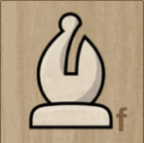Bishops can move as far as they want, but only along a diagonal. This makes it so a bishop must stay on the color square (light or dark) that it starts on. Since one bishop is on each color, they work well together.
-
Rook
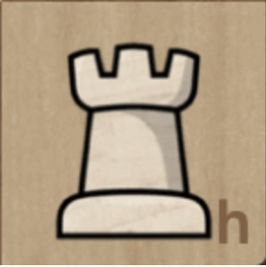Rooks can move as far as they want, but only forwards, backwards, or to the sides.
-
Queen
Queens can move as far as they want in one straight direction. This includes diagonally, forward, backward, and to the sides. This makes queens the most powerful piece since it can move in the most directions.
-
King
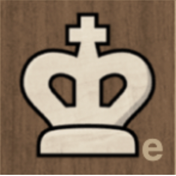The King can move in any direction, like the queen, but only one square at a time. Despite the King being the most important piece this makes it one of the weakest. A King can also never move into "check" and must move out of "check". Check means that the King is on a square on which it can be captured by another piece.
Below are examples of each piece and how they can move around the board.
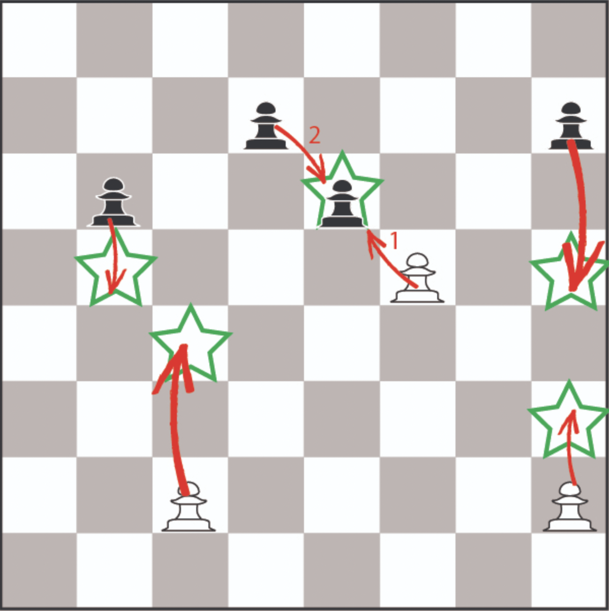 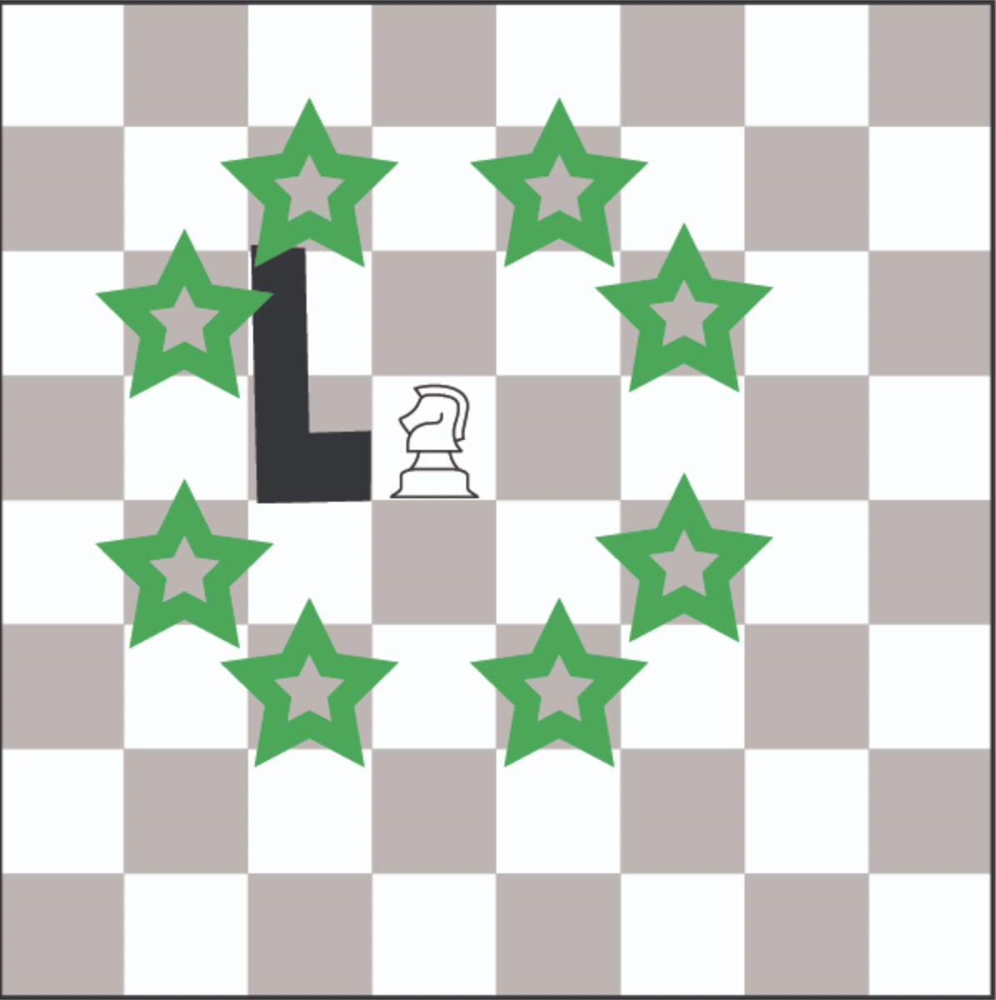 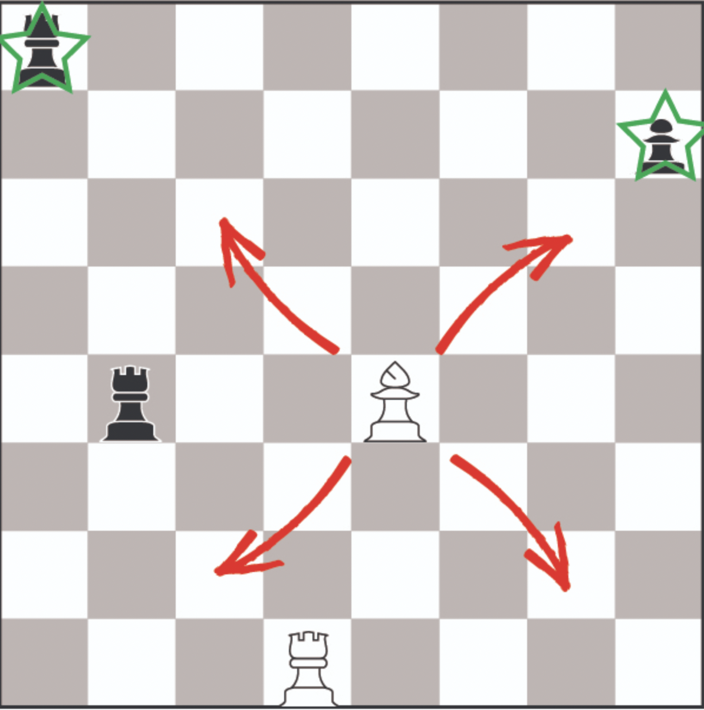 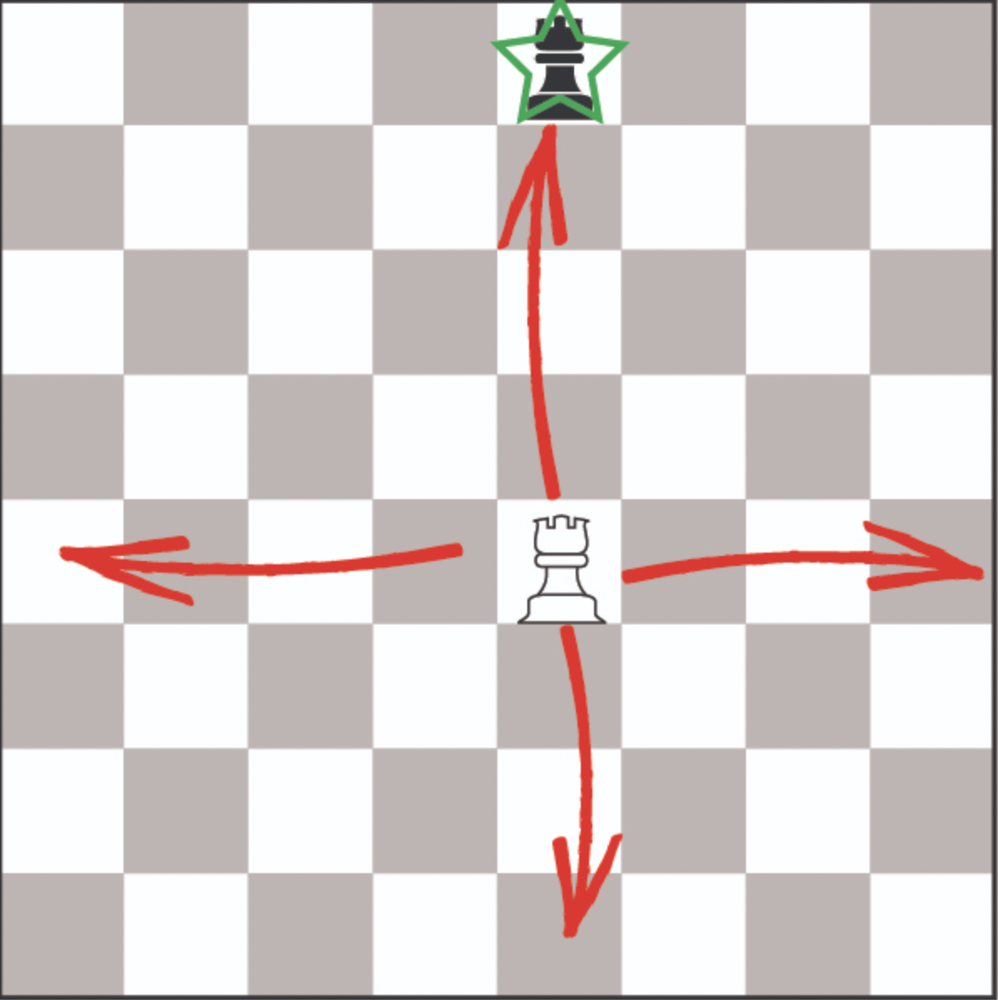 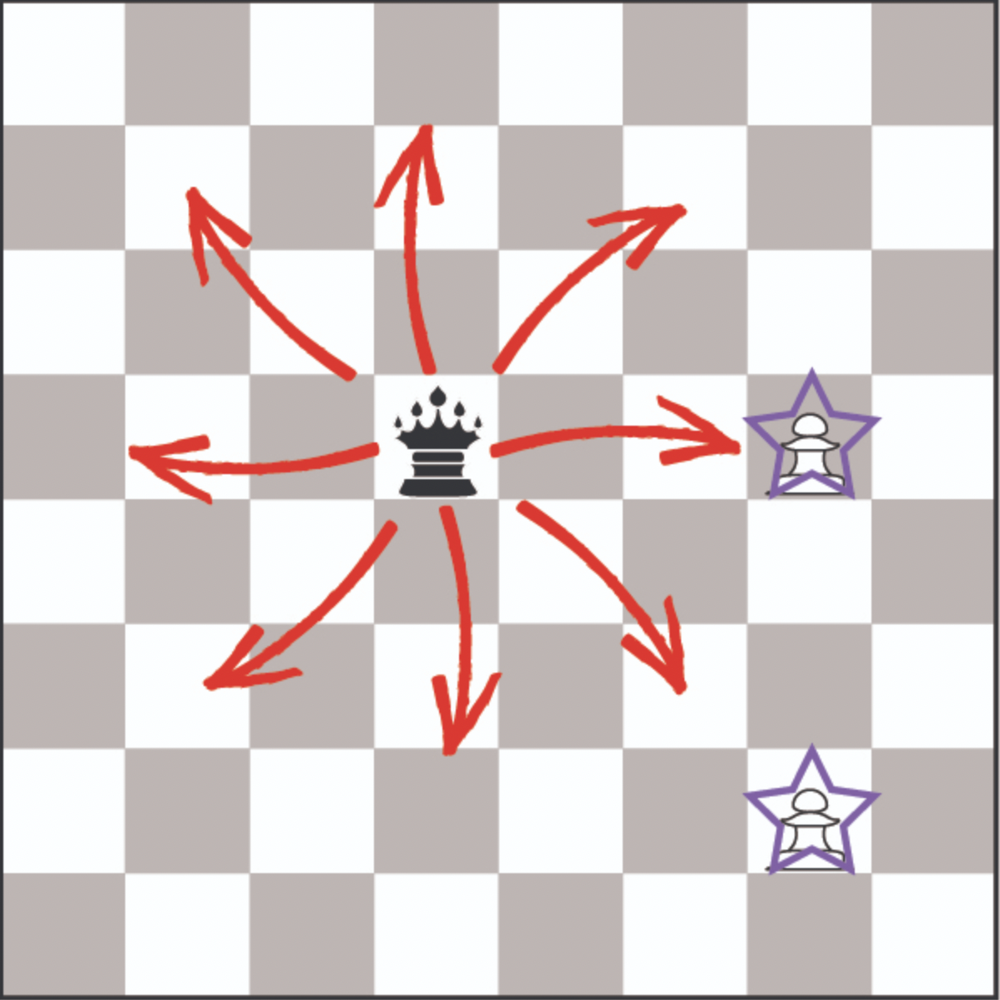 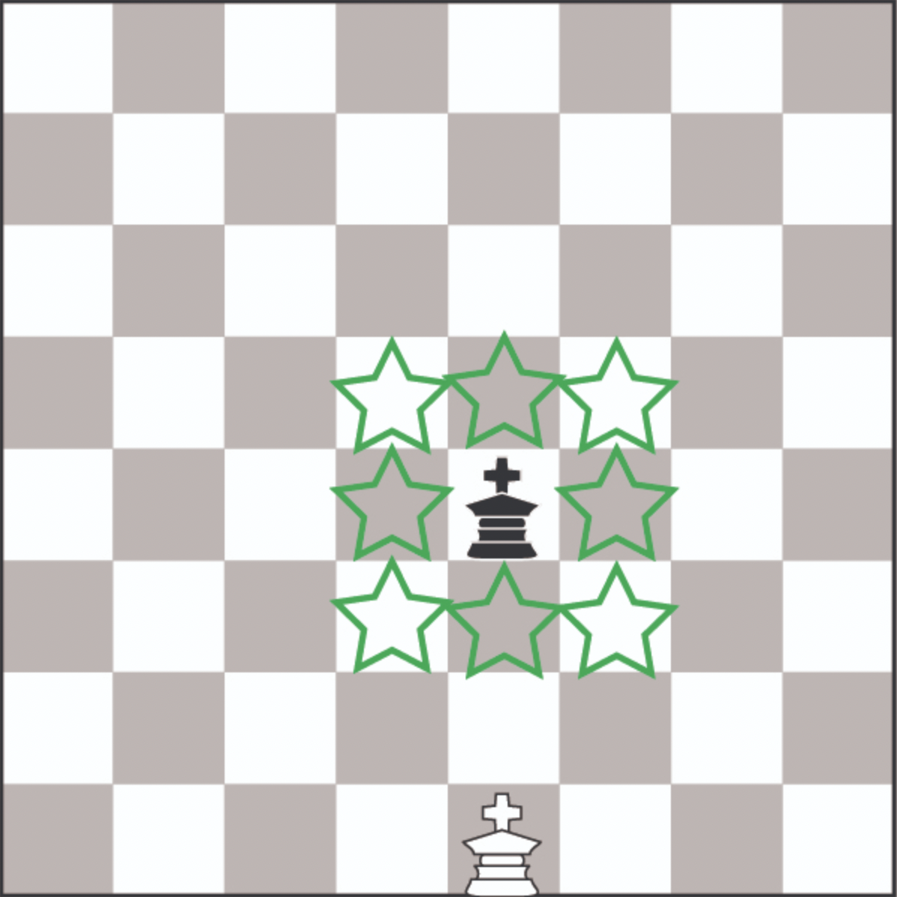Checkmate
There are lots of unique ways to force the opposing King into checkmate and win the game. Here are a few examples below so you can get a basic understanding.
-
Back Rank Checkmate
One of the most common checkmates is along the back rank (or row). Here the king can't move off 0f the back rank while a rook or queen attacks it along that row.
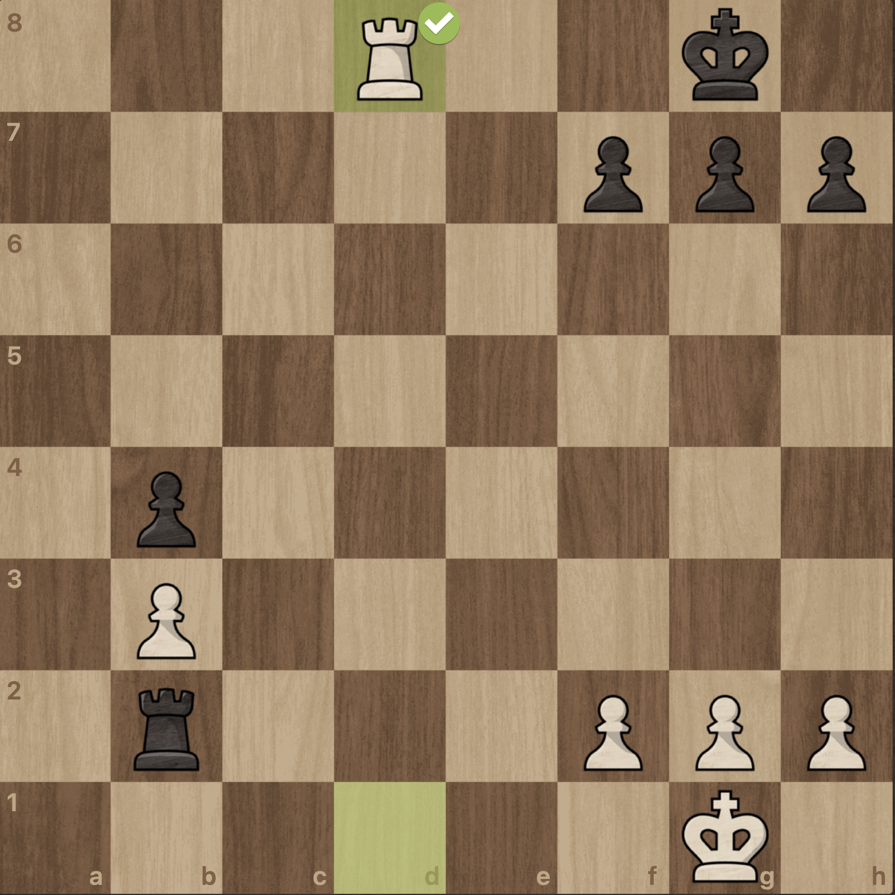 -
Smothered Mate
The smothered mate can only happen when the king is completely trapped by its own pieces. This allows a knight to attack it on one square and end the game.
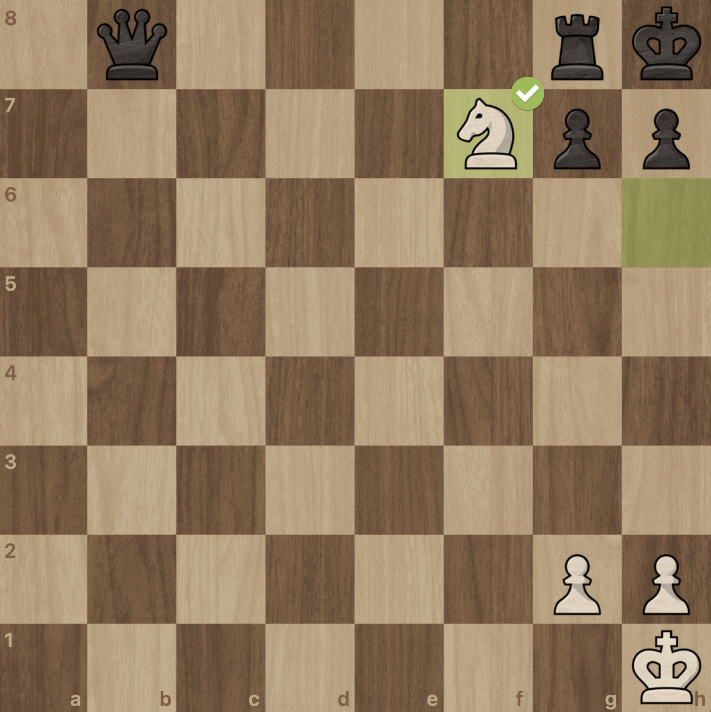 -
Scholars Mate
The scholars mate is one of the most well-known check mates since it can be accomploished in just four moves. In this checkmate the bishop protects the queen which gives the king no safe squares and ends the game.
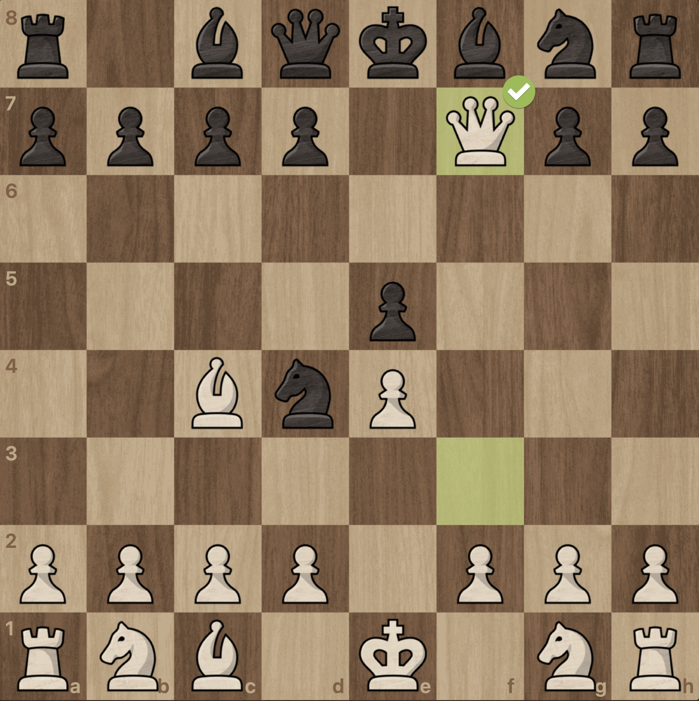